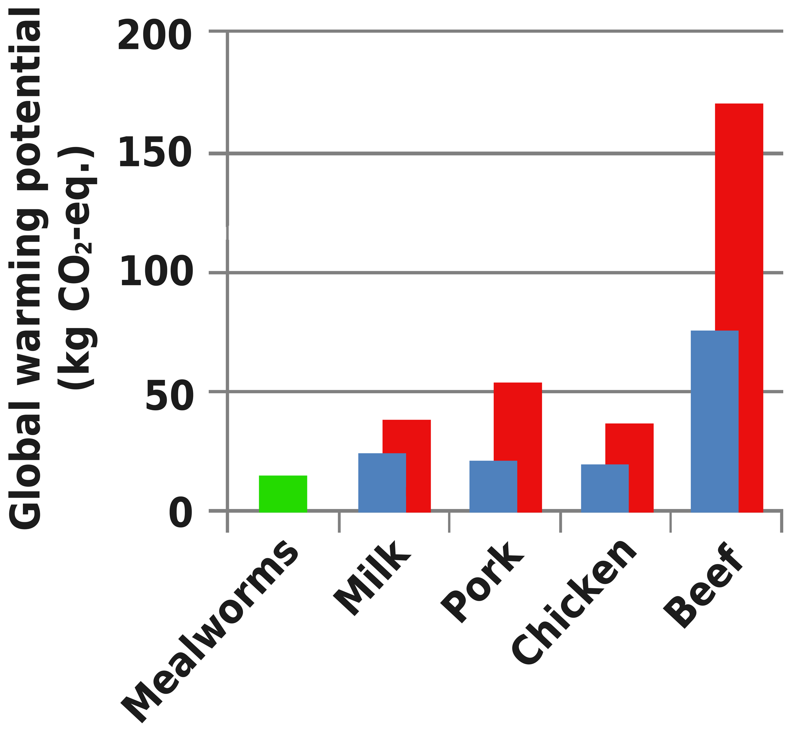
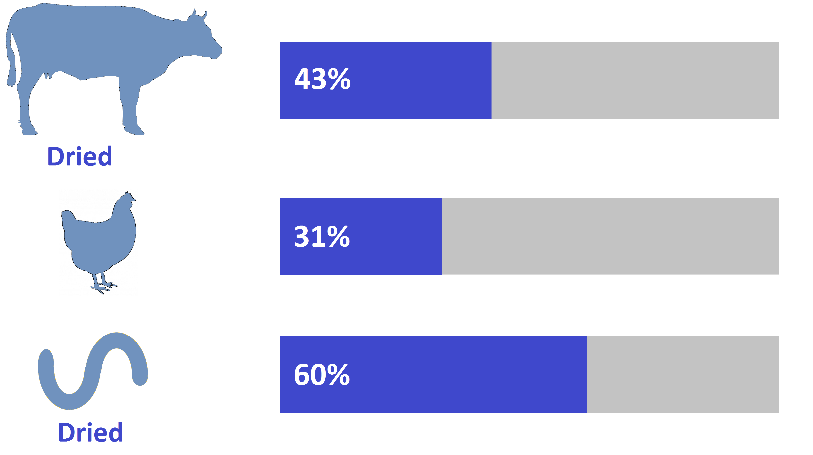

In 2013, University of Wisconsin PhD students Rachel Bergmans and Valerie Stull co-developed The Mission to Improve Global Health Through Insects (MIGHTi) – a collaborative research project, business idea, and innovation designed to address the multifaceted and systematic factors that contribute to food insecurity in Southern Africa while simultaneously joining a global effort to re-envision food systems in a changing climate. The project promotes edible insect production (also called microlivestock farming) as a sustainable protein source for human consumption and animal feed – one that supports healthy people and a healthy planet. Mealworms are more environmentally friendly than conventional livestock and are nutrient dense; they require little labor, little water, and quickly recycle agricultural waste making them an ideal food source for resource poor areas. The project proposal won a national US Agriculture Innovation Prize in April 2014, and the MIGHTi team is now beginning the research and development phase.
MIGHTi is committed to empowering women, and is specifically interested in working with women’s cooperatives, women’s groups, and schools. MIGHTi will use culturally tailored, context specific microlivestock kits that are environmentally and economically sustainable to help farmers produce an added protein source for rural diets and supplement for animal feed year round. MIGHTi’s long-term vision is to expand the reach of insect products by encouraging consumption in urban areas and by those suffering from malnutrition through the sale of a mealworm protein powder.
We, as MIGHTi, seek to investigate the potential for women’s cooperatives and schools in rural communities to raise and sell insects (such as mealworms) to boost protein intake, improve food security, and supplement household income.
To combat food insecurity in rural communities, sustainable agricultural solutions that provide locally produced, year-round food sources are needed. Insect farming offers one potential option to sustainably feed a growing population without the environmental consequences or high costs of conventional agriculture or livestock production. Insect consumption in Zimbabwe and Zambia is common, where women are accustomed to collecting and selling insects. Overharvesting, however, poses a risk of ecological damage and wild insects are not available year round, limiting their utility for food security. To build on the cultural acceptability of insect consumption while also protecting the environment, we intend to research the potential for in-home mealworm farming (using state-of-the-art kits, limited food scraps, and inexpensive feed) to produce a highly nutritious protein source. One potential insect to farm is the mealworm. Mealworms (the larval form of the mealworm beetle, Tenebrio molitor) are common throughout the world and used in many places to supplement human nutrition and animal feed. Mealworms survive on a flexible diet of bio-waste (leaves, food scraps etc.) and poultry feed –ideal for inexpensive in-house farming. They are a favorable alternative to traditional livestock production for human consumption due to reduced greenhouse gas emissions, minimal land requirements, and climate resilience.
Why Insects?
In 2013, the UN Food and Agriculture Organization (FAO) highlighted insect consumption (entomophagy) as one possible solution to feeding the 870 million struggling with hunger worldwide. Insects provide an inexpensive source of dietary protein and essential nutrients; therefore, farming insects, also known as microlivestock farming, can benefit communities with inadequate food supplies.1 Compared with other livestock, insects require drastically fewer inputs and have a low global warming potential (see Figure 1). Insects need only ~2 kg of feed for each kg of weight gain – an important consideration since agriculture is responsible for up to 24% of today’s greenhouse gas emissions.2 With increased climatic pressure on agriculture, particularly in developing countries, insect consumption may offer an important antidote to food security pressures. Recently, efforts have been made to promote insect production for food across the globe. In South Africa, flies are being used to convert biodegradable waste into nutrient rich and cost effective animal feed.3 FAO is also funding microlivestock research across parts of Southeast Asia.4–6 The international excitement around entomophagy and its potential to improve global food security is rooted in its nutritional, environmental, and social benefits.
In Zambia and Zimbabwe, people consume many types of insects.7 Mopane worms, for example, are frequently collected and sold by women and are an important protein and income source. However, mopane worms are only available twice per year, at which time the market becomes saturated,7–11 limiting their utility for year-round food security. There is also a risk of overharvesting mopane worms, which can cause ecological damage. Thus, encouraging increased collection is not sustainable. While entomophagy is common in Southern Africa and globally, little effort has been made to understand the potential impact of insect farming on food security, livelihoods, the environment, or economic development. We aim to address this knowledge gap by pilot testing a project that promotes insect consumption for both humans and animals by teaching people to farm insects.
Specifically, our project will introduce mealworm farming to rural communities in Zambia and Zimbabwe.
Mealworms are common throughout the world and produced in many places as a nutritional supplement for animal feed and human consumption. Mealworms are nutritionally equivalent to mopane worms and have a similar flavor,12,13 but they survive on a flexible diet of bio-waste (such as corn husks, food scraps, leaves, etc.), grain, or poultry feed – ideal for inexpensive in-house farming. Not only do mealworms utilize available food sources more efficiently than other livestock, they can also breakdown low-nutrient byproducts of common crops grown in Southern Africa (such as maize, wheat, millet and peanuts) and quickly recycle them into high-quality food, rich in protein, energy, and fat. Locally sourced waste products provide adequate nutrition for mealworms and come at little cost, especially for rural farmers who have access to such waste. Mealworms are also easy to raise, and with limited processing (short boiling and solar drying) harvested mealworms can be used to improve household food security. First, dried or fried mealworms can be eaten directly. Second, they can be sold locally (as human food or animal feed) to generate income. Other markets for sales may also exist, including health clinics that treat malnutrition or to organizations that provide famine relief products (currently made from protein sources like whey or soy).
Laboratory experiments suggest that yellow mealworms are appropriate for human consumption, as they contain all 22 amino acids (including the essential amino acids) and have a protein content between 63.31 and 68.87% of dry weight with balanced feed.13 See comparisons with other protein sources in Figure 2.
Southern Africa offers a perfect launching platform for this project because insect consumption is already practiced and common in the region, but wild harvested insects have not yet solved the food insecurity problem. The market for edible insects in Zambia and Zimbabwe is substantial. Our diverse team has ample experience in Southern Africa; collectively, we have knowledge of international development, sustainable farming, nutrition, cooperatives, food security, edible insect products, and insect farming. While our initial efforts will focus on Zambia and Zimbabwe, the results of our research will be applicable to surrounding areas including Mozambique, southern Angola, and Botswana. We are actively seeking in-country partners in Zambia and Zimbabwe for a pilot test.
Our goal is to address the multifaceted and systematic factors that contribute to food insecurity by collaborating with rural women’s cooperatives and schools to investigate the acceptability of farming insects and determine whether year-round insect production and consumption can feasibly improve local food security and health.
The commercial edible insect industry, as well as broader microlivestock farming, is rapidly growing in size and popularity worldwide. Yet, the potential positive (or negative) impact of such efforts is unknown. Currently, 80% of the world’s population consumes insects, yet national food regulatory agencies, such as the United States Federal Drug Administration (FDA) and the European Food Safety Agency (EFSA) are only in the initial stages of conducting insect consumption risk assessment.4 This project will provide understanding of whether promoting insect consumption and introducing microlivestock farming to rural areas can provide a safe, sustainable, and effective means to improve global food security. It will also inform future research efforts which aim to assess whether an insect protein powder (derived from dried, roasted, and ground insects) added to traditional foods or as supplement for the treatment of chronic malnutrition can effectively reduce nutrient deficiencies among populations where whole insect consumption may not be accepted or preferred. Insects are dairy-free, gluten-free, and soy-free, so that insect powder may be an ideal source of protein for populations with restrictive diets.
Funding awarded from the 2014 United States National Agricultural Innovation Prize and the 2014 Wisconsin Energy and Sustainability Challenge currently supports MIGHTi. Additional funding is needed to advance research efforts, establish pilot test sites, and thoroughly explore environmental and health impacts of rural microlivestock farming.
June to July 2014: Developed preliminary survey tool
August 2014: Scoping Visit
Fall 2014: Preparation for Pilot Study
Spring to Summer 2015: Pilot Study Phase 1
Fall 2015: Pilot Study Phase 2
Spring to Summer 2016: Pilot Study Phase 3
Valerie Stull, MPH, Nelson Institute for Environmental Studies, Center for Sustainability and the Global Environment, University of Wisconsin-Madison, USA
Rachel Bergmans, MPH, Population Health Sciences Department, School of Medicine, University of Wisconsin-Madison, USA